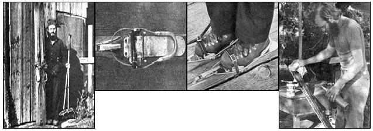

All across the northern half of the country this time of year, snow-covered woods and fields tempt lovers of the outdoors to explore the winter landscape . . . and more and more of us are doing just that, by the old Scandinavian technique of cross-country skiing. There's just one drawback: Although the Nordic version of the sport is less expensive than the Alpine (or downhill) variation, beginners can still spend close to $100 getting outfitted with quality gear. By carefully ignoring the advice of the local sporting goods dealer, however, an enterprising novice can obtain a very usable outfit for $20.00 or less.
If such a proposition attracts you, you'll probably have to begin by broadening your conception of cross-country equipment. The fact is that the widely used "skinny skis" which you most likely associate with this sport are best suited for racing and very light touring, and are not the back-pasture skier's ideal choice. They're quick and very low in weight, true, but they're also rather fragile and nearly useless in powder or deep, fluffy drifts. Anyone who anticipates carrying a pack or tackling rough terrain or soft snow would be well advised to use wider "heavy touring" boards, which offer greater strength, stability and flotation and are also easier for a beginner to control.
Although new heavy touring skis are nearly impossible to buy in the U.S., equipment of this type was used extensively in the 30's, 40's and early 50's when cross-country was the most prevalent form of the sport. Many of these old-time outfits survive in good condition and may be purchased at a Goodwill or Salvation Army store for $3.00 to $10.00 per pair. When you shop, look for: [1] absence of cracks or I warping, [2] wood rather than synthetic bases, [3] no metal edges and [4] correct length (reaching from the floor to your upheld wrist).
To prepare your bargain skis for use, first remove all old varnish and wax from the bases with a sharp paint scraper and sandpaper (a power sander, used carefully, is very handy for this job). Then buy a can of pine tar at a drugstore or veterinary supply outlet and paint it on the bare wood (on the bottoms of the skis only). Heat small sections of the tarred surface with a propane torch until the coating bubbles, and quickly wipe off the unabsorbed compound with a soft cloth. The skis are then ready for the application of cross-country wax according -to the manufacturer's instructions. This step is usually postponed until the actual ski trip begins and snow conditions are known.
If you wish, you can also sandpaper the tops and sides of your skis and finish them with a coat or two of marine varnish for an attractive appearance.
The only bindings practical for use with the wider touring skis are of the cable variety. Often, used skis come with satisfactory fastenings already attached. If you aren't so fortunate, look first for used bindings (the old Northland brand, for instance) and then-if nothing turns up-investigate new cable touring types such as the Jofab.
The binding's toe assembly should adjust to 'Cradle the toe of your boot snugly . . . but at the same time, the cable arrangement should allow free vertical movement of the heel. If there are cable guides on the skis, they should be ahead of the spot where the ball of your foot will rest. In case they're mounted behind that point, remove or relocate them, Under no conditions should you use cable guides to lock your heels down, even for short downhill runs. Since touring bindings are not built to release under stress, such a practice is a very good way to break a leg.
Anyone who says you need special boots to go cross-country skiing is probably trying to sell footwear. Almost any good-quality hiking or work boots, treated with a wax-type leather conditioner, can be made to work quite well in most cable touring bindings. They also provide more warmth than the average commercial gear, and are better for wearing off the skis while in camp. The trick in getting good performance out of them is to play with the adjustments on the binding's toepiece until you get a close fit that holds the boot in line with the ski.
Touring poles should be as light and as strong as possible, and long enough to reach from the floor to your armpits. If skiing in soft snow is anticipated, the baskets should be somewhat larger than normal. New poles can be purchased at a reasonable price, but used ones cost still less.
To obtain your cross-country wardrobe, check the Goodwill store for lightweight woolen clothing. Wool is best because it's somewhat water-repellent and retains its warmth when wet. Cross-country skiers dress in layers and frequently put on or take off a garment or two to avoid getting too hot or cold. Thus a heavy parka would be inappropriate, except for use in camp. Several wool shirts or sweaters would be more suitable on the trail.
If you desire a pair of knickers, you can make them from men's lightweight woolen dress slacks, available cheap at Goodwill. Gaiters are helpful accessories for all skiers, and are a necessity for anyone whose boot tops don't fit snugly. They can be made from waterproofed nylon fabric . . . with elastic sewn in channels around the top and bottom, and elastic straps to fit under the boot.
Other accessories range from cotton gloves and baseball caps to homemade sheepskin hats and mittens, depending upon the expected severity of the weather. Hand coverings should be durable as well as warm, for one of their functions is to protect the skin from abrasion.
One additional piece of helpful equipment is a good Nordic ski manual such as A Beginner's Guide to Cross-Country Skiing by Ned Baldwin. This fine little paperback sells for $1.25 and is published by Greywood Publishing Ltd., 101 Duncan. Mill Road, Don Mills, Ontario, Canada. Also, when you're learning to ski, it helps immensely to take along a friend who is patient and familiar with the sport.
I've assisted many of my friends and relatives in outfitting themselves with secondhand gear, and most are now avid cross-country skiers. Not one has ever expressed a wish to give up the Goodwill equipment for the commercial variety. Which just goes to prove my point: All it really takes to get started in this sport is some ingenuity, an eye for bargains, a few dollars and a desire to move through the winter landscape without destroying its peace.
Newcomers to cross-country skiing may be glad to know that there's a thriving organization devoted to furthering the sport: NAHSTA, the National Hiking and Ski Touring Association. The group welcomes inquiries from novices and, for a mere 50 cents, will send you an excellent booklet- Ski Touring for Beginners by Bjorn Kjollstrom and Bill Rusin-to get you off to a good start. Later, when you're past tripping over the ends of your skis, you can also request information on trails in your area (or in one you wish to visit).
The NAHSTA people are keen promoters of non-mechanized outdoor activity in general, and are currently urging each state to build 200 miles of new walking and hiking trails as a bicentennial celebration. They'll be glad to tell you how you can help with this and other worthwhile projects . . . including a Volunteer Conservation Corps which the association trains to assist in the maintenance of publicly owned wilderness areas. NAHSTA runs its own Outdoor School at Vail, Colorado, and offers summer courses in hiking, backpacking and various survival skills. If you'd like to know more about these goings-on, write NAHSTA, P.O. Box 7421, Colorado Springs, Colorado 80918.
|
 FAR LEFT. A $15. 00 outfit. ABOVE LEFT: The old Northland Micromatic binding, excellent for touring. ABOVE RIGHT: Northland bindings used with hiking boots (note the position of the cable guides). RIGHT: Heat treatment of skis painted with pine tar. |
|
|